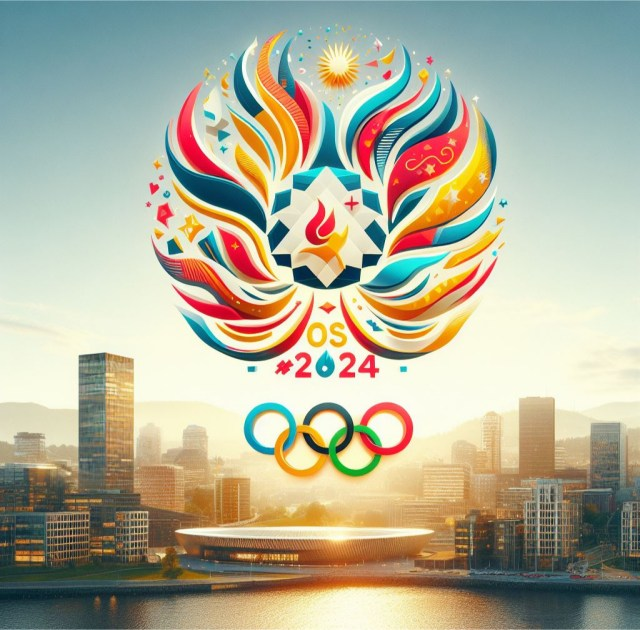

velkommen
til
SUMMER GAMES 2024

Episke Sommerleker med Nye Idretter, Nye Lag, og Større Overraskelser
Mens vi tar farvel med det gamle året og ønsker inn en ny æra, gjør verden seg klar for en ekstraordinær sportsfest - Sommerlekene 2024. Med løfte om å være større og bedre enn noensinne før, vil denne utgaven av lekene omdefinere den sportslige horisonten med introduksjonen av nye idretter og lag.
Episke Øyeblikk på Horisonten
Mens utøvere gjør seg klare for å vise frem sine ferdigheter på den store scenen, er forventningene høye for skapelsen av uforglemmelige, episke øyeblikk. Fra rekordbrytende prestasjoner til hjerte-stansende avslutninger, kan tilskuere forvente en følelsesmessig berg-og-dalbane gjennom hele konkurransen.
Nye Idretter, Nye Spenningsmomenter
En av de mest spennende aspektene ved Sommerlekene 2024 er introduksjonen av flere nye idretter som lover å bringe ny spenning og utfordre grensene for idrettsevne. Innføringen av disse disiplinene reflekterer Den internasjonale olympiske komités forpliktelse til innovasjon og tilpasningsevne.
Episke Sommerleker med Nye Idretter, Nye Lag, og Større Overraskelser
Mens vi tar farvel med det gamle året og ønsker inn en ny æra, gjør verden seg klar for en ekstraordinær sportsfest - Sommerlekene 2024. Med løfte om å være større og bedre enn noensinne før, vil denne utgaven av lekene omdefinere den sportslige horisonten med introduksjonen av nye idretter og lag.
Episke Sommerleker med Nye Idretter, Nye Lag, og Større Overraskelser
Mens vi tar farvel med det gamle året og ønsker inn en ny æra, gjør verden seg klar for en ekstraordinær sportsfest - Sommerlekene 2024. Med løfte om å være større og bedre enn noensinne før, vil denne utgaven av lekene omdefinere den sportslige horisonten med introduksjonen av nye idretter og lag.